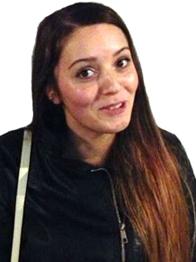
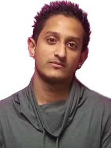
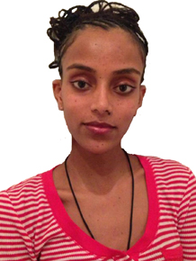
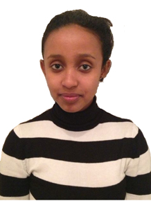

|  | Name: | Lauren Turn |
| Birthday: | 07/09/88 | |
| Location: | Edinburgh, Scotland | |
| I have been part of LSBU for the past four years studying Arts and Law. I was born in Scotland and moved to London with my family at the age of 12. Overall it has been a good experience at LSBU for many reasons. I have met so many new people who I will keep in touch with after graduation and maybe even work with at some point in the near future. I have enjoyed my time at LSBU although I had some stressful times which I have had to overcome due to the heavy workload. One of the main things that helped me cope with the stress was being part of the dance club. I really enjoyed dancing and being part of the dance club has also improved my dancing that is why my nickname was 'Stretchy'. My plan is to open a solicitor's office with some friends from my course to start off and move on from there. | ||
|  | Name: | Anikan Sharma |
| Birthday: | 14/03/87 | |
| Location: | Watford, England | |
| I had been studying Media Arts for three years and graduated in 2008. My favourite lecturer was Professor Jacobson who was my course leader whom also had a great influence on me. During my time at the university, I spent most of my time in the Perry Library, I would go there for a couple hours to look up various video editions by previous students to increase my knowledge and to get a better idea of what I want to pursue a career in. I have met many new people who I hope would still be in touch with after graduation. While studying at LSBU, I also took a part-time job at the Union Theatre. At the Union Theatre I was able to gain a better understanding of many different aspects of being a great actor; hopefully I will be able get a more important role to build up a professional status after graduation. I have a real interest in movies, especially horror movies. I would always gather up friends at the university accommodation to socialise and have a great time with. Finally, I would like to thank everyone who has helped me become academically successful as well as those who have stuck by me even through my constant blunders and pranks. | ||
|  | Name: | Judy James |
| Birthday: | 16/07/86 | |
| Location: | Bedfordshire, England | |
| I had studied Art and Literature for 3 years and graduated in 2008. My favourite teacher is Dr Campbell who was my course supervisor. While at university, I spent most of my time in the Keyworth Centre Cafe. I am a Trainee Art Teacher at Elmhurst Primary School which has given me a great experience in my favoured occupation field. My favourite university take away is Tip Tap Mein where I enjoyed slurping my sweet and sour soup. My most regretted moment at university was when I tripped up the stairs and hit my elbow on the banister whilst rushing to get to lecture on time. I was especially lucky as the staircase was deserted. My favourite quote is: "Nothing is impossible; the word itself says 'I'm possible'!" by Audrey Hepburn. During my spare time, I enjoy going out with the girls to play bowling. I also keep fit by participating in extracurricular activities such as cycling and badminton. I enjoying eating Thai food and listening to music. I dislike widow spiders and mice as I am aware they are on the rise in the UK. Finally the funniest person I know is Lee Evans and love attending his shows. | ||
|  | Name: | Susie Kanji |
| Birthday: | 26/08/87 | |
| Location: | South Kensington, England | |
| My area of expertise was Media and Law. I graduated in 2008. My favourite lecturer is Mr George who teaches Media Law Concepts. While I was at university I spent most of my time in learning resources centre (LRC) as it has the right atmosphere to get work done whilst socialising with people. I am a trainee Legal & Media Affairs Executive for the Ministry of Defence. I ate regularly at Nandos which was my desired University take away. My most regretted moment at University was when I attempted the wrong coursework for two weeks and only realised later. My favourite quote is "Success is not final, failure is not fatal: it is the courage to continue that counts," by Winston Churchill. I enjoy taking part in yoga as it keeps my mind focused which helps me while at work. Furthermore I dislike rock music and snakes. The funniest known person is Alan Carr and I enjoy watching his show on Channel 4. Finally I consider Uma Thurman as my role model as Kill Bill is my favourite movie. | ||